Tugas 3 — Ekstraksi Fitur dan Clustering Data Time Series#
Studi kasus: Polutan udara Kecamatan Klampis, Kabupaten Bangkalan
1. Persiapan#
import os
from pathlib import Path
import pandas as pd
import numpy as np
import matplotlib.pyplot as plt
import tsfel
from sklearn.preprocessing import StandardScaler
from sklearn.decomposition import PCA
from sklearn.cluster import KMeans
from sklearn.metrics import silhouette_score
from IPython.display import display, Markdown
BASE_DIR = Path.cwd()
print(f"Folder kerja: {BASE_DIR}")
print("Library siap")
Folder kerja: C:\Users\SIRUL AMIN\Documents\psd_b_1\pemrosesan-data-sains
Library siap
excel_candidates = sorted(BASE_DIR.glob("*.xlsx")) + sorted(BASE_DIR.glob("*.xls"))
if not excel_candidates:
raise FileNotFoundError("Tidak ditemukan file Excel TSFEL (*.xlsx/*.xls) di folder kerja.")
excel_path = excel_candidates[0]
xls = pd.ExcelFile(excel_path)
print("File:", excel_path.name)
print("Sheet:", xls.sheet_names)
File: data_tsfel_20260920_080900.xlsx
Sheet: ['Semua Fitur', 'CO', 'SO2', 'CH4', 'NO2']
2. Time Series setiap Polutan#
Upload CSV hasil crawling untuk CO, SO₂, CH₄, dan NO₂. Notebook mendeteksi kolom tanggal dan kolom nilai secara otomatis.
def detect_date(df):
candidates = [x for x in df.columns if any(k in str(x).lower() for k in ['date', 'tanggal', 'time', 'datetime'])]
return candidates[0] if candidates else None
def detect_value(df, pollutant):
pollutant = pollutant.lower()
preferred = [x for x in df.columns if pollutant in str(x).lower() and any(k in str(x).lower() for k in ['mean', 'value', 'data'])]
if preferred:
return preferred[0]
numeric = df.select_dtypes(include=np.number).columns.tolist()
return numeric[0] if numeric else None
def load_ts(file_path, pollutant):
data = pd.read_csv(file_path)
date_col = detect_date(data)
value_col = detect_value(data, pollutant)
if date_col is None or value_col is None:
return None
result = data[[date_col, value_col]].copy()
result.columns = ['tanggal', pollutant]
result['tanggal'] = pd.to_datetime(result['tanggal'], errors='coerce')
result[pollutant] = pd.to_numeric(result[pollutant], errors='coerce')
return result.dropna(subset=['tanggal', pollutant]).sort_values('tanggal').reset_index(drop=True)
csv_files = sorted(BASE_DIR.glob('*.csv'))
time_series = {}
for pollutant in ['CO', 'SO2', 'CH4', 'NO2']:
matches = [f for f in csv_files if pollutant.lower() in f.name.lower() and 'custom' not in f.name.lower()]
if matches:
loaded = load_ts(matches[0], pollutant)
if loaded is not None and not loaded.empty:
time_series[pollutant] = loaded
print(f"{pollutant}: {matches[0].name} -> {loaded.shape}")
if not time_series:
raise FileNotFoundError("Tidak ada CSV polutan yang berhasil dibaca.")
print('Berhasil:', list(time_series))
CO: CO_365_hari_preprocessed.csv -> (365, 2)
SO2: Sentinel-5P_SO2-SO2_VISUALIZED-2026-02-10T00_00_00_000Z-2026-08-10T23_59_59_999Z.csv -> (125, 2)
CH4: Sentinel-5P_CH4-CH4_VISUALIZED-2025-08-31T00_00_00_000Z-2026-08-31T23_59_59_999Z.csv -> (14, 2)
NO2: Sentinel-5P_NO2-NO2_VISUALIZED-2025-01-28T00_00_00_000Z-2026-01-28T23_59_59_999Z.csv -> (176, 2)
Berhasil: ['CO', 'SO2', 'CH4', 'NO2']
for p,d in time_series.items():
plt.figure(figsize=(14,5)); plt.plot(d['tanggal'],d[p]); plt.title(f'Time Series {p} — Kecamatan Klampis'); plt.xlabel('Tanggal'); plt.ylabel('Nilai'); plt.xticks(rotation=45); plt.grid(True); plt.tight_layout(); plt.show()
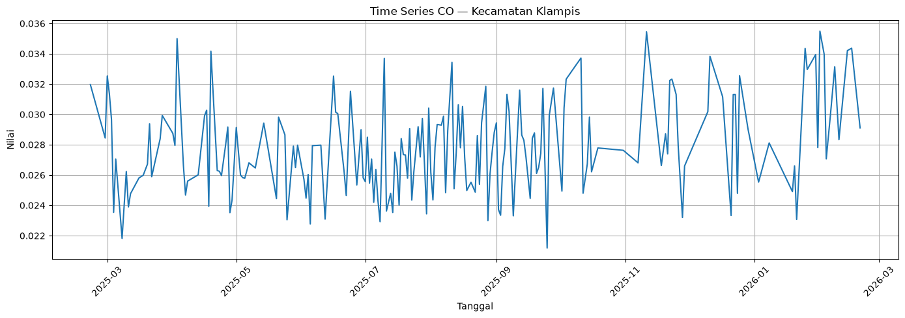
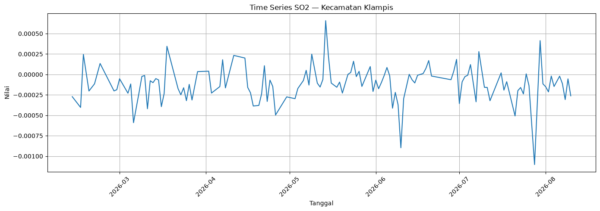
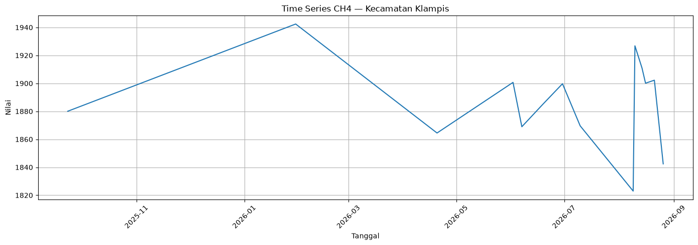
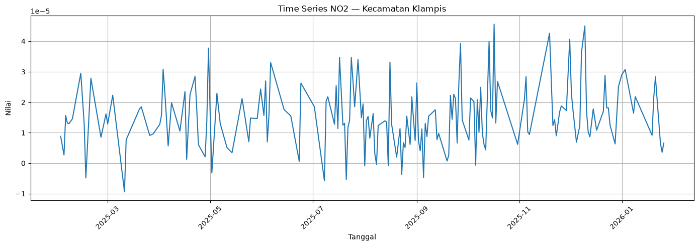
3. Statistik Dasar#
Mean = Σx/n. Median = nilai tengah. Range = max−min. Variance = Σ(x−mean)²/(n−1). Standard deviation = √variance. IQR = Q3−Q1. Statistik digunakan untuk meringkas pusat, penyebaran, dan rentang data.
for p,d in time_series.items():
x=d[p].dropna()
s=pd.Series({'Mean':x.mean(),'Median':x.median(),'Minimum':x.min(),'Maximum':x.max(),'Range':x.max()-x.min(),'Variance':x.var(),'Standard Deviation':x.std(),'Q1':x.quantile(.25),'Q3':x.quantile(.75),'IQR':x.quantile(.75)-x.quantile(.25)})
print('\n',p); display(s.to_frame('Nilai'))
CO
| Nilai | |
|---|---|
| Mean | 0.028136 |
| Median | 0.027740 |
| Minimum | 0.021186 |
| Maximum | 0.035489 |
| Range | 0.014303 |
| Variance | 0.000008 |
| Standard Deviation | 0.002829 |
| Q1 | 0.026111 |
| Q3 | 0.029878 |
| IQR | 0.003767 |
SO2
| Nilai | |
|---|---|
| Mean | -1.164913e-04 |
| Median | -1.150246e-04 |
| Minimum | -1.102721e-03 |
| Maximum | 6.578993e-04 |
| Range | 1.760620e-03 |
| Variance | 4.957743e-08 |
| Standard Deviation | 2.226599e-04 |
| Q1 | -2.247811e-04 |
| Q3 | -9.789785e-06 |
| IQR | 2.149913e-04 |
CH4
| Nilai | |
|---|---|
| Mean | 1886.915187 |
| Median | 1892.460144 |
| Minimum | 1822.977173 |
| Maximum | 1942.427246 |
| Range | 119.450073 |
| Variance | 1019.635902 |
| Standard Deviation | 31.931738 |
| Q1 | 1869.147491 |
| Q3 | 1901.871063 |
| IQR | 32.723572 |
NO2
| Nilai | |
|---|---|
| Mean | 1.527128e-05 |
| Median | 1.433597e-05 |
| Minimum | -9.422401e-06 |
| Maximum | 4.562547e-05 |
| Range | 5.504788e-05 |
| Variance | 1.100782e-10 |
| Standard Deviation | 1.049181e-05 |
| Q1 | 8.085945e-06 |
| Q3 | 2.139095e-05 |
| IQR | 1.330500e-05 |
Contoh manual statistik#
Gunakan X = [2, 4, 4, 6, 9]. Mean = (2+4+4+6+9)/5 = 5. Range = 9−2 = 7. Variance sampel = ((2−5)²+(4−5)²+(4−5)²+(6−5)²+(9−5)²)/4 = 7. Standard deviation = √7 ≈ 2.646.
X=np.array([2,4,4,6,9],float)
print(pd.Series({'Mean':X.mean(),'Median':np.median(X),'Range':X.max()-X.min(),'Variance sample':X.var(ddof=1),'Std sample':X.std(ddof=1),'Q1':np.quantile(X,.25),'Q3':np.quantile(X,.75),'IQR':np.quantile(X,.75)-np.quantile(X,.25)}))
Mean 5.000000
Median 4.000000
Range 7.000000
Variance sample 7.000000
Std sample 2.645751
Q1 4.000000
Q3 6.000000
IQR 2.000000
dtype: float64
4. 68 Fitur TSFEL#
Daftar berikut mengikuti urutan 68 kelompok fitur yang digunakan pada notebook sebelumnya. Untuk fitur yang menghasilkan beberapa koefisien (misalnya MFCC/LPCC/ECDF/wavelet), kelompok fitur tetap diperlakukan sebagai satu kelompok sesuai format tugas.
No |
Fitur |
Konsep/bentuk perhitungan |
|---|---|---|
1 |
Absolute energy |
|
2 |
Area under the curve |
|
3 |
Autocorrelation |
|
4 |
Average power |
|
5 |
Centroid |
|
6 |
Max |
|
7 |
Mean |
|
8 |
Median |
|
9 |
Min |
|
10 |
Standard deviation |
|
11 |
Variance |
|
12 |
DFA |
|
13 |
Signal distance |
|
14 |
ECDF |
|
15 |
ECDF Percentile |
|
16 |
ECDF Percentile Count |
|
17 |
ECDF Slope |
|
18 |
Entropy |
|
19 |
Fundamental frequency |
|
20 |
Higuchi fractal dimension |
|
21 |
Histogram mode |
|
22 |
Human range energy |
|
23 |
Hurst exponent |
|
24 |
Interquartile range |
|
25 |
Kurtosis |
|
26 |
Lempel-Ziv |
|
27 |
LPCC |
|
28 |
Maximum frequency |
|
29 |
Max power spectrum |
|
30 |
Maximum fractal length |
|
31 |
Mean absolute deviation |
`Σ |
32 |
Mean absolute diff |
`Σ |
33 |
Mean diff |
|
34 |
Median absolute deviation |
`median( |
35 |
Median absolute diff |
`median( |
36 |
Median diff |
|
37 |
Median frequency |
|
38 |
MFCC |
|
39 |
MSE |
|
40 |
Negative turning points |
|
41 |
Neighbourhood peaks |
|
42 |
Petrosian fractal dimension |
|
43 |
Peak to peak distance |
|
44 |
Positive turning points |
|
45 |
Power bandwidth |
|
46 |
Root mean square |
|
47 |
Skewness |
|
48 |
Slope |
|
49 |
Spectral centroid |
|
50 |
Spectral decrease |
|
51 |
Spectral distance |
|
52 |
Spectral entropy |
|
53 |
Spectral kurtosis |
|
54 |
Spectral positive turning |
|
55 |
Spectral roll-off |
|
56 |
Spectral roll-on |
|
57 |
Spectral skewness |
|
58 |
Spectral slope |
|
59 |
Spectral spread |
|
60 |
Spectral variation |
|
61 |
Spectrogram mean coefficient |
|
62 |
Sum absolute diff |
`Σ |
63 |
Wavelet absolute mean |
`mean( |
64 |
Wavelet energy |
|
65 |
Wavelet entropy |
|
66 |
Wavelet standard deviation |
|
67 |
Wavelet variance |
|
68 |
Zero crossing rate |
|
Contoh manual + verifikasi TSFEL#
Untuk X=[2,−1,3,−2,4]: RMS = √((4+1+9+4+16)/5)=√6.8≈2.608. Zero crossing = 4 karena semua pasangan berubah tanda. Mean absolute difference = (3+4+5+6)/4 = 4.5. Fitur sederhana diverifikasi dengan TSFEL berikut.
X = np.array([2, -1, 3, -2, 4], dtype=float)
cfg = tsfel.get_features_by_domain('temporal')
r = tsfel.time_series_features_extractor(cfg, X, verbose=0)
rms_columns = [c for c in r.columns if 'root mean square' in c.lower() or 'rms' in c.lower()]
diff_columns = [c for c in r.columns if 'mean absolute diff' in c.lower()]
print('Manual RMS:', np.sqrt(np.mean(X ** 2)))
print('Manual Mean absolute diff:', np.mean(np.abs(np.diff(X))))
print('Manual Zero crossing:', np.sum(np.sign(X[:-1]) != np.sign(X[1:])))
print('TSFEL Root mean square columns:')
display(r[rms_columns])
print('TSFEL Mean absolute diff columns:')
display(r[diff_columns])
Manual RMS: 2.6076809620810595
Manual Mean absolute diff: 4.5
Manual Zero crossing: 4
TSFEL Root mean square columns:
C:\Users\SIRUL AMIN\AppData\Local\Temp\ipykernel_24720\3140777969.py:3: UserWarning: Using default sampling frequency set in configuration file.
r = tsfel.time_series_features_extractor(cfg, X, verbose=0)
| 0 |
|---|
TSFEL Mean absolute diff columns:
| 0_Mean absolute diff | |
|---|---|
| 0 | 4.5 |
Untuk fitur kompleks seperti DFA, Higuchi, Lempel-Ziv, LPCC, MFCC, wavelet, dan fitur spektral, perhitungan manual penuh terdiri dari beberapa tahap algoritmik. Tabel di atas memberi konsep dan bentuk perhitungannya; nilai aktual diverifikasi oleh implementasi TSFEL.
5. Menyiapkan 68 Fitur per Polutan#
sheet_map={}
for p in ['CO','SO2','CH4','NO2']:
if p in xls.sheet_names:
sheet_map[p]=pd.read_excel(excel_path,sheet_name=p)
print(p,sheet_map[p].shape)
def numeric_features(df):
ids=[c for c in df.columns if str(c).lower() in ['nama','daerah','name','region','rowid']]
X=df.drop(columns=ids,errors='ignore').apply(pd.to_numeric,errors='coerce')
X=X.dropna(axis=1,how='all').fillna(X.median(numeric_only=True)).dropna(axis=1,how='all')
return X.iloc[:,:68].copy()
X_polutan={p:numeric_features(d) for p,d in sheet_map.items()}
for p,X in X_polutan.items(): print(p,X.shape)
CO (19, 70)
SO2 (19, 70)
CH4 (19, 70)
NO2 (19, 70)
CO (19, 68)
SO2 (19, 68)
CH4 (19, 68)
NO2 (19, 68)
6. Standardisasi dan PCA#
Standardisasi menggunakan z-score: z=(x−μ)/σ. PCA digunakan setelah standardisasi.
X_scaled={}
for p,X in X_polutan.items():
X_scaled[p]=StandardScaler().fit_transform(X)
def pca_eval(X):
maxc=min(X.shape[0],X.shape[1])
p=PCA(n_components=maxc); Z=p.fit_transform(X)
t=pd.DataFrame({'PCA':range(1,maxc+1),'Explained Variance':p.explained_variance_ratio_,'Cumulative Variance':np.cumsum(p.explained_variance_ratio_)})
return p,Z,t
pca_results={}
for p,X in X_scaled.items():
model,Z,t=pca_eval(X); pca_results[p]=(model,Z,t)
print('\n',p); display(t)
CO
| PCA | Explained Variance | Cumulative Variance | |
|---|---|---|---|
| 0 | 1 | 2.677525e-01 | 0.267753 |
| 1 | 2 | 1.465473e-01 | 0.414300 |
| 2 | 3 | 1.425428e-01 | 0.556843 |
| 3 | 4 | 1.241031e-01 | 0.680946 |
| 4 | 5 | 9.729037e-02 | 0.778236 |
| 5 | 6 | 5.303537e-02 | 0.831272 |
| 6 | 7 | 4.271927e-02 | 0.873991 |
| 7 | 8 | 3.421218e-02 | 0.908203 |
| 8 | 9 | 3.031661e-02 | 0.938520 |
| 9 | 10 | 2.100400e-02 | 0.959524 |
| 10 | 11 | 1.482162e-02 | 0.974345 |
| 11 | 12 | 1.106339e-02 | 0.985409 |
| 12 | 13 | 6.711740e-03 | 0.992120 |
| 13 | 14 | 3.805951e-03 | 0.995926 |
| 14 | 15 | 2.744503e-03 | 0.998671 |
| 15 | 16 | 9.434505e-04 | 0.999614 |
| 16 | 17 | 3.037467e-04 | 0.999918 |
| 17 | 18 | 8.203523e-05 | 1.000000 |
| 18 | 19 | 2.754817e-33 | 1.000000 |
SO2
| PCA | Explained Variance | Cumulative Variance | |
|---|---|---|---|
| 0 | 1 | 3.956521e-01 | 0.395652 |
| 1 | 2 | 1.623380e-01 | 0.557990 |
| 2 | 3 | 1.160167e-01 | 0.674007 |
| 3 | 4 | 9.469806e-02 | 0.768705 |
| 4 | 5 | 8.032881e-02 | 0.849034 |
| 5 | 6 | 6.395607e-02 | 0.912990 |
| 6 | 7 | 2.617385e-02 | 0.939164 |
| 7 | 8 | 1.663626e-02 | 0.955800 |
| 8 | 9 | 1.338955e-02 | 0.969189 |
| 9 | 10 | 1.192290e-02 | 0.981112 |
| 10 | 11 | 8.328048e-03 | 0.989440 |
| 11 | 12 | 5.605594e-03 | 0.995046 |
| 12 | 13 | 2.731867e-03 | 0.997778 |
| 13 | 14 | 1.328758e-03 | 0.999107 |
| 14 | 15 | 5.730328e-04 | 0.999680 |
| 15 | 16 | 1.914955e-04 | 0.999871 |
| 16 | 17 | 7.646778e-05 | 0.999948 |
| 17 | 18 | 5.242646e-05 | 1.000000 |
| 18 | 19 | 2.904385e-33 | 1.000000 |
CH4
| PCA | Explained Variance | Cumulative Variance | |
|---|---|---|---|
| 0 | 1 | 2.042998e-01 | 0.204300 |
| 1 | 2 | 1.806557e-01 | 0.384955 |
| 2 | 3 | 1.235707e-01 | 0.508526 |
| 3 | 4 | 1.053203e-01 | 0.613846 |
| 4 | 5 | 8.767051e-02 | 0.701517 |
| 5 | 6 | 8.052077e-02 | 0.782038 |
| 6 | 7 | 5.819108e-02 | 0.840229 |
| 7 | 8 | 3.877150e-02 | 0.879000 |
| 8 | 9 | 3.460211e-02 | 0.913602 |
| 9 | 10 | 2.751406e-02 | 0.941117 |
| 10 | 11 | 1.966712e-02 | 0.960784 |
| 11 | 12 | 1.276215e-02 | 0.973546 |
| 12 | 13 | 9.510279e-03 | 0.983056 |
| 13 | 14 | 8.805110e-03 | 0.991861 |
| 14 | 15 | 3.519099e-03 | 0.995380 |
| 15 | 16 | 2.213681e-03 | 0.997594 |
| 16 | 17 | 1.702696e-03 | 0.999297 |
| 17 | 18 | 7.033560e-04 | 1.000000 |
| 18 | 19 | 5.683842e-33 | 1.000000 |
NO2
| PCA | Explained Variance | Cumulative Variance | |
|---|---|---|---|
| 0 | 1 | 5.702286e-01 | 0.570229 |
| 1 | 2 | 1.155159e-01 | 0.685745 |
| 2 | 3 | 8.994128e-02 | 0.775686 |
| 3 | 4 | 7.022529e-02 | 0.845911 |
| 4 | 5 | 4.512948e-02 | 0.891041 |
| 5 | 6 | 3.856358e-02 | 0.929604 |
| 6 | 7 | 2.373726e-02 | 0.953341 |
| 7 | 8 | 1.598707e-02 | 0.969328 |
| 8 | 9 | 1.058942e-02 | 0.979918 |
| 9 | 10 | 5.979031e-03 | 0.985897 |
| 10 | 11 | 5.417694e-03 | 0.991315 |
| 11 | 12 | 3.723813e-03 | 0.995038 |
| 12 | 13 | 1.860131e-03 | 0.996899 |
| 13 | 14 | 1.474935e-03 | 0.998374 |
| 14 | 15 | 1.308019e-03 | 0.999682 |
| 15 | 16 | 2.048116e-04 | 0.999886 |
| 16 | 17 | 8.811005e-05 | 0.999974 |
| 17 | 18 | 2.554848e-05 | 1.000000 |
| 18 | 19 | 4.229997e-33 | 1.000000 |
for p,(model,Z,t) in pca_results.items():
plt.figure(figsize=(10,4)); plt.plot(t.PCA,t['Cumulative Variance'],marker='o'); plt.xlabel('Jumlah PCA'); plt.ylabel('Cumulative Explained Variance'); plt.title(f'PCA — {p}'); plt.grid(True); plt.show()
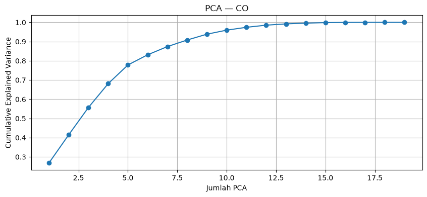
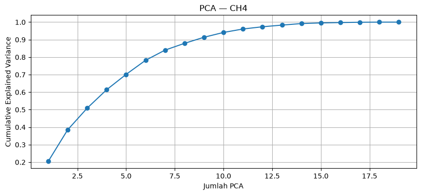
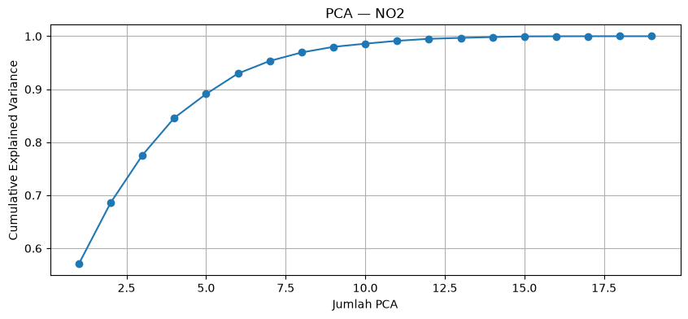
7. Menentukan Jumlah Cluster K-Means#
Elbow melihat perubahan inertia saat k bertambah. Silhouette mengukur kedekatan data dengan cluster sendiri dibandingkan cluster lain. Keduanya dilaporkan bersama; jangan memasukkan label “terbaik” tanpa melihat hasil aktual.
def km_eval(X,kmin=2,kmax=8):
kmax=min(kmax,X.shape[0]-1); rows=[]
for k in range(kmin,kmax+1):
m=KMeans(n_clusters=k,random_state=42,n_init=10); lab=m.fit_predict(X)
rows.append({'k':k,'inertia':m.inertia_,'silhouette':silhouette_score(X,lab)})
return pd.DataFrame(rows)
hasil_68={}
for p,X in X_scaled.items():
e=km_eval(X); hasil_68[p]=e; print('\n===',p,'68 fitur ==='); display(e)
plt.figure(figsize=(10,4)); plt.plot(e.k,e.inertia,marker='o'); plt.title(f'Elbow — {p}'); plt.xlabel('k'); plt.ylabel('Inertia'); plt.grid(True); plt.show()
plt.figure(figsize=(10,4)); plt.plot(e.k,e.silhouette,marker='o'); plt.title(f'Silhouette — {p}'); plt.xlabel('k'); plt.ylabel('Silhouette'); plt.grid(True); plt.show()
=== CO 68 fitur ===
| k | inertia | silhouette | |
|---|---|---|---|
| 0 | 2 | 964.057223 | 0.324814 |
| 1 | 3 | 774.017225 | 0.344620 |
| 2 | 4 | 617.527357 | 0.350798 |
| 3 | 5 | 437.727750 | 0.368727 |
| 4 | 6 | 302.495707 | 0.303804 |
| 5 | 7 | 240.516940 | 0.312133 |
| 6 | 8 | 196.938399 | 0.270383 |
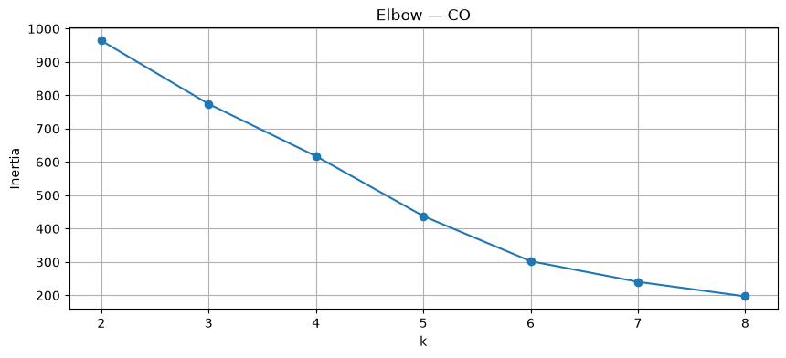
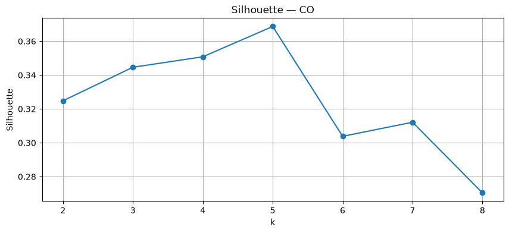
=== SO2 68 fitur ===
| k | inertia | silhouette | |
|---|---|---|---|
| 0 | 2 | 783.945015 | 0.602519 |
| 1 | 3 | 613.239490 | 0.277701 |
| 2 | 4 | 468.399449 | 0.302409 |
| 3 | 5 | 314.368015 | 0.354668 |
| 4 | 6 | 210.404856 | 0.353034 |
| 5 | 7 | 123.631540 | 0.381167 |
| 6 | 8 | 95.986490 | 0.332544 |
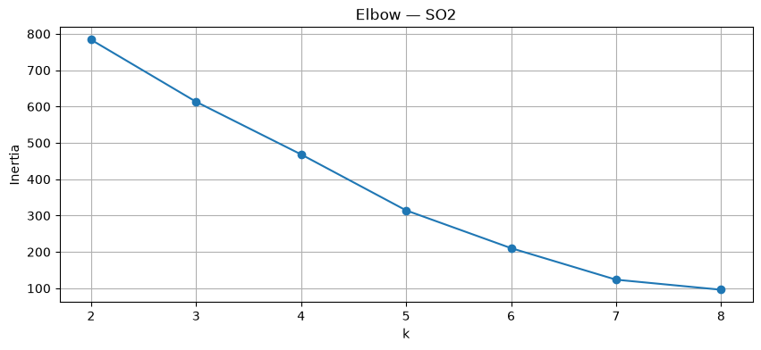
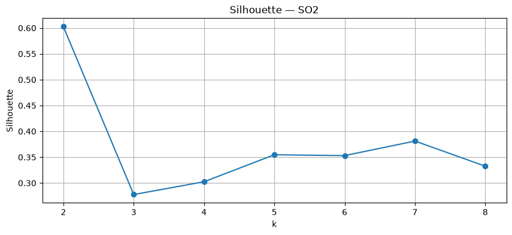
=== CH4 68 fitur ===
| k | inertia | silhouette | |
|---|---|---|---|
| 0 | 2 | 1054.391500 | 0.182445 |
| 1 | 3 | 849.085722 | 0.200287 |
| 2 | 4 | 689.168945 | 0.215979 |
| 3 | 5 | 542.849516 | 0.263174 |
| 4 | 6 | 418.448804 | 0.279260 |
| 5 | 7 | 311.859519 | 0.289520 |
| 6 | 8 | 230.887283 | 0.286330 |
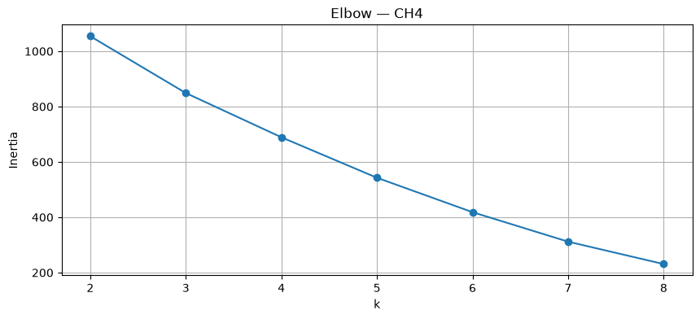
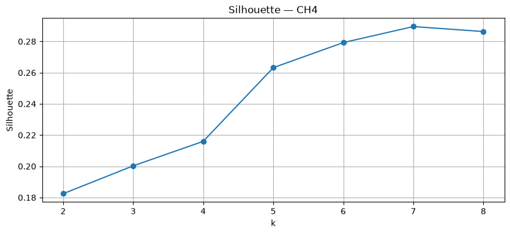
=== NO2 68 fitur ===
| k | inertia | silhouette | |
|---|---|---|---|
| 0 | 2 | 555.822126 | 0.698217 |
| 1 | 3 | 413.178326 | 0.437431 |
| 2 | 4 | 306.234082 | 0.264725 |
| 3 | 5 | 216.865748 | 0.301787 |
| 4 | 6 | 163.722722 | 0.325114 |
| 5 | 7 | 114.555116 | 0.342097 |
| 6 | 8 | 85.183825 | 0.318740 |
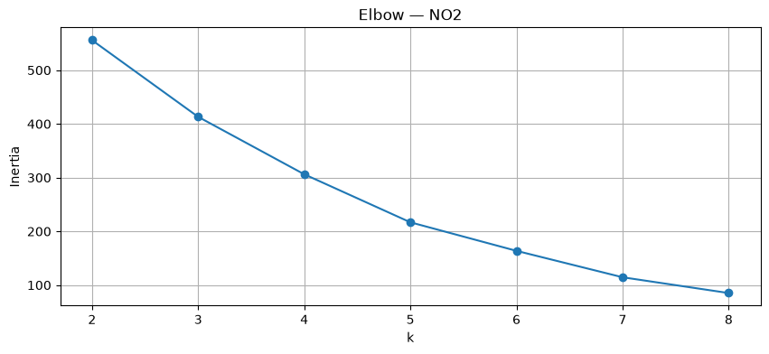
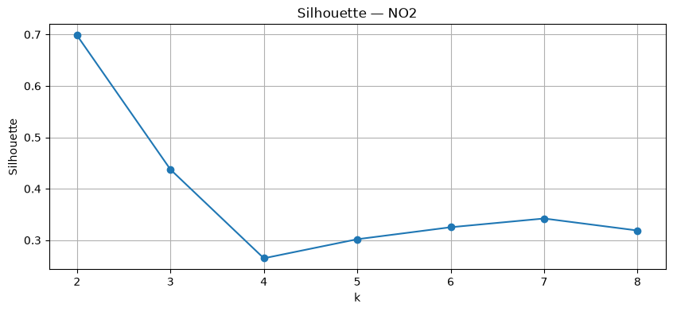
8. PCA 1 sampai PCA yang Feasible + K-Means#
Karena hanya ada 19 observasi, notebook menguji PCA 1–18. PCA 19 masih dapat dihitung tetapi evaluasi clustering dengan 19 komponen tidak menambah informasi dibandingkan ruang data penuh; batas PCA tetap dijelaskan secara eksplisit.
def pca_kmeans_table(X,max_pca=None,kmax=8):
max_possible=min(X.shape[0],X.shape[1]); max_pca=min(max_possible-1 if max_possible>1 else 1, max_pca or 18)
rows=[]
for n in range(1,max_pca+1):
Z=PCA(n_components=n).fit_transform(X)
for k in range(2,min(kmax,Z.shape[0]-1)+1):
m=KMeans(n_clusters=k,random_state=42,n_init=10); lab=m.fit_predict(Z)
rows.append({'jumlah_pca':n,'k':k,'silhouette':silhouette_score(Z,lab),'inertia':m.inertia_})
return pd.DataFrame(rows)
pca_cluster={}
for p,X in X_scaled.items():
t=pca_kmeans_table(X); pca_cluster[p]=t; print('\n',p); display(t)
piv=t.pivot(index='jumlah_pca',columns='k',values='silhouette')
plt.figure(figsize=(12,5))
for k in piv.columns: plt.plot(piv.index,piv[k],marker='o',label=f'k={k}')
plt.title(f'Silhouette vs PCA — {p}'); plt.xlabel('Jumlah PCA'); plt.ylabel('Silhouette'); plt.grid(True); plt.legend(); plt.show()
CO
| jumlah_pca | k | silhouette | inertia | |
|---|---|---|---|---|
| 0 | 1 | 2 | 0.860115 | 32.774347 |
| 1 | 1 | 3 | 0.744077 | 12.064243 |
| 2 | 1 | 4 | 0.558719 | 5.053456 |
| 3 | 1 | 5 | 0.549227 | 3.093758 |
| 4 | 1 | 6 | 0.514915 | 1.370478 |
| ... | ... | ... | ... | ... |
| 121 | 18 | 4 | 0.350798 | 617.527357 |
| 122 | 18 | 5 | 0.368727 | 437.727750 |
| 123 | 18 | 6 | 0.303804 | 302.495707 |
| 124 | 18 | 7 | 0.312133 | 240.516940 |
| 125 | 18 | 8 | 0.270383 | 196.938399 |
126 rows × 4 columns
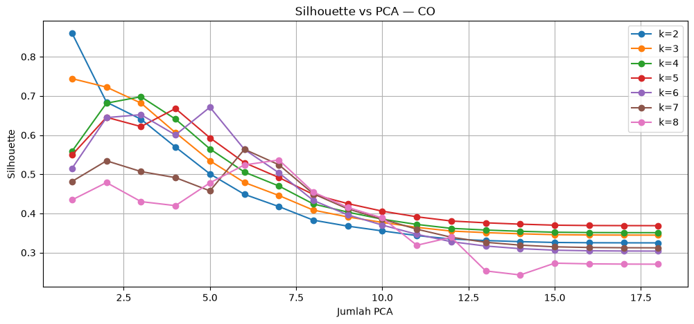
SO2
| jumlah_pca | k | silhouette | inertia | |
|---|---|---|---|---|
| 0 | 1 | 2 | 0.924133 | 4.935258 |
| 1 | 1 | 3 | 0.737865 | 0.618509 |
| 2 | 1 | 4 | 0.699527 | 0.187749 |
| 3 | 1 | 5 | 0.680262 | 0.088394 |
| 4 | 1 | 6 | 0.661316 | 0.045665 |
| ... | ... | ... | ... | ... |
| 121 | 18 | 4 | 0.302409 | 468.399449 |
| 122 | 18 | 5 | 0.354668 | 314.368015 |
| 123 | 18 | 6 | 0.353034 | 210.404856 |
| 124 | 18 | 7 | 0.381167 | 123.631540 |
| 125 | 18 | 8 | 0.332544 | 95.986490 |
126 rows × 4 columns
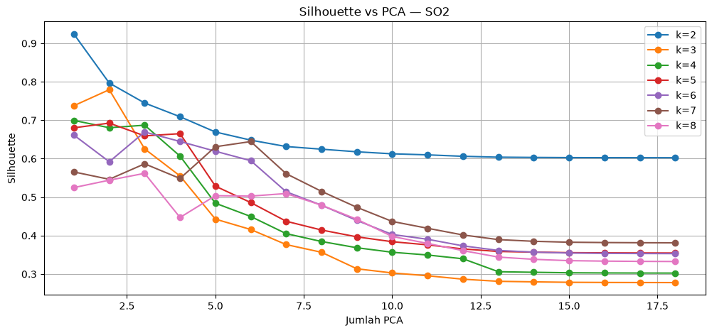
CH4
| jumlah_pca | k | silhouette | inertia | |
|---|---|---|---|---|
| 0 | 1 | 2 | 0.737370 | 44.372569 |
| 1 | 1 | 3 | 0.716637 | 21.457668 |
| 2 | 1 | 4 | 0.689095 | 8.372903 |
| 3 | 1 | 5 | 0.582578 | 5.269602 |
| 4 | 1 | 6 | 0.519443 | 3.149307 |
| ... | ... | ... | ... | ... |
| 121 | 18 | 4 | 0.215979 | 689.168945 |
| 122 | 18 | 5 | 0.263174 | 542.849516 |
| 123 | 18 | 6 | 0.279260 | 418.448804 |
| 124 | 18 | 7 | 0.289520 | 311.859519 |
| 125 | 18 | 8 | 0.286330 | 230.887283 |
126 rows × 4 columns
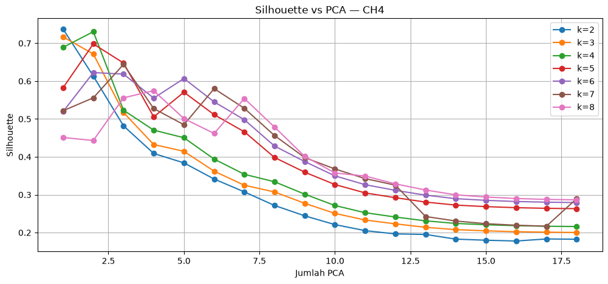
NO2
| jumlah_pca | k | silhouette | inertia | |
|---|---|---|---|---|
| 0 | 1 | 2 | 0.939923 | 0.618741 |
| 1 | 1 | 3 | 0.631925 | 0.158421 |
| 2 | 1 | 4 | 0.608000 | 0.096789 |
| 3 | 1 | 5 | 0.536414 | 0.036469 |
| 4 | 1 | 6 | 0.605417 | 0.014976 |
| ... | ... | ... | ... | ... |
| 121 | 18 | 4 | 0.264725 | 306.234082 |
| 122 | 18 | 5 | 0.301787 | 216.865748 |
| 123 | 18 | 6 | 0.325114 | 163.722722 |
| 124 | 18 | 7 | 0.342097 | 114.555116 |
| 125 | 18 | 8 | 0.318740 | 85.183825 |
126 rows × 4 columns
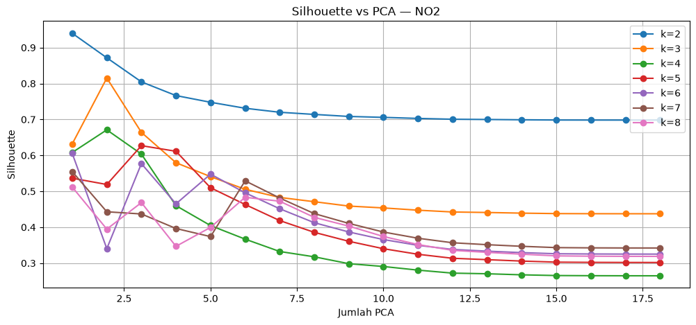
9. Gabungan 272 Fitur#
68 fitur CO + 68 SO₂ + 68 CH₄ + 68 NO₂ = 272 fitur.
# Gabungkan 68 fitur dari masing-masing polutan
n = min(X.shape[0] for X in X_scaled.values())
X272 = np.hstack([
X_scaled['CO'][:n],
X_scaled['SO2'][:n],
X_scaled['CH4'][:n],
X_scaled['NO2'][:n]
])
print('Ukuran:', X272.shape)
print('K-Means 272 fitur')
e272 = km_eval(X272)
display(e272)
# Elbow Method
plt.figure(figsize=(10,4))
plt.plot(
e272.k,
e272.inertia,
marker='o'
)
plt.title('Elbow — 272 Fitur')
plt.xlabel('k')
plt.ylabel('Inertia')
plt.grid(True)
plt.show()
# Silhouette Score
plt.figure(figsize=(10,4))
plt.plot(
e272.k,
e272.silhouette,
marker='o'
)
plt.title('Silhouette — 272 Fitur')
plt.xlabel('k')
plt.ylabel('Silhouette')
plt.grid(True)
plt.show()
Ukuran: (19, 272)
K-Means 272 fitur
| k | inertia | silhouette | |
|---|---|---|---|
| 0 | 2 | 3801.595148 | 0.476048 |
| 1 | 3 | 3006.638507 | 0.206971 |
| 2 | 4 | 2475.840746 | 0.227971 |
| 3 | 5 | 2042.104440 | 0.237929 |
| 4 | 6 | 1662.072535 | 0.248579 |
| 5 | 7 | 1279.539413 | 0.214741 |
| 6 | 8 | 965.928868 | 0.222847 |
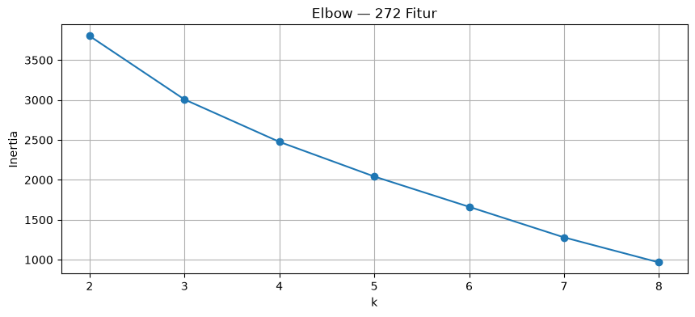
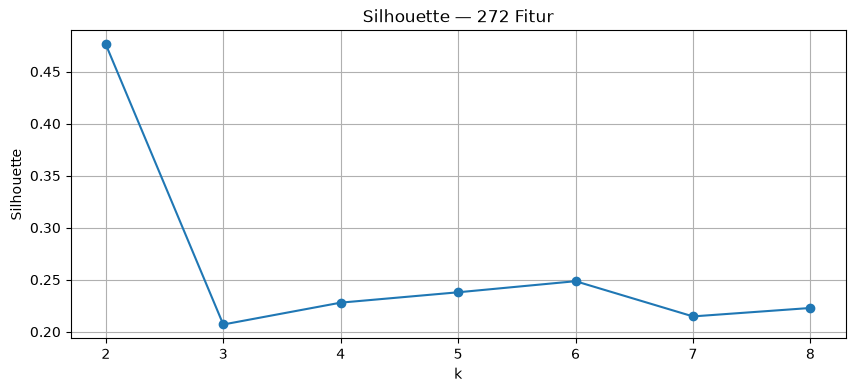
p272,Z272,t272=pca_eval(X272)
display(t272)
t272_small=pca_kmeans_table(X272)
display(t272_small)
piv=t272_small.pivot(index='jumlah_pca',columns='k',values='silhouette')
plt.figure(figsize=(12,5))
for k in piv.columns: plt.plot(piv.index,piv[k],marker='o',label=f'k={k}')
plt.title('Silhouette vs PCA — 272 Fitur'); plt.xlabel('Jumlah PCA'); plt.ylabel('Silhouette'); plt.grid(True); plt.legend(); plt.show()
| PCA | Explained Variance | Cumulative Variance | |
|---|---|---|---|
| 0 | 1 | 2.664122e-01 | 0.266412 |
| 1 | 2 | 1.617014e-01 | 0.428114 |
| 2 | 3 | 1.150919e-01 | 0.543205 |
| 3 | 4 | 8.561558e-02 | 0.628821 |
| 4 | 5 | 7.472032e-02 | 0.703541 |
| 5 | 6 | 7.203217e-02 | 0.775574 |
| 6 | 7 | 5.128498e-02 | 0.826859 |
| 7 | 8 | 3.971426e-02 | 0.866573 |
| 8 | 9 | 3.370662e-02 | 0.900279 |
| 9 | 10 | 2.177191e-02 | 0.922051 |
| 10 | 11 | 1.781004e-02 | 0.939861 |
| 11 | 12 | 1.583618e-02 | 0.955698 |
| 12 | 13 | 1.359073e-02 | 0.969288 |
| 13 | 14 | 1.262049e-02 | 0.981909 |
| 14 | 15 | 8.396661e-03 | 0.990305 |
| 15 | 16 | 4.874300e-03 | 0.995180 |
| 16 | 17 | 3.254173e-03 | 0.998434 |
| 17 | 18 | 1.566082e-03 | 1.000000 |
| 18 | 19 | 6.534340e-33 | 1.000000 |
| jumlah_pca | k | silhouette | inertia | |
|---|---|---|---|---|
| 0 | 1 | 2 | 0.914868 | 23.843403 |
| 1 | 1 | 3 | 0.728995 | 3.308835 |
| 2 | 1 | 4 | 0.590956 | 1.748290 |
| 3 | 1 | 5 | 0.639319 | 0.658661 |
| 4 | 1 | 6 | 0.594575 | 0.338721 |
| ... | ... | ... | ... | ... |
| 121 | 18 | 4 | 0.227971 | 2475.840746 |
| 122 | 18 | 5 | 0.237929 | 2042.104440 |
| 123 | 18 | 6 | 0.248579 | 1662.072535 |
| 124 | 18 | 7 | 0.214741 | 1279.539413 |
| 125 | 18 | 8 | 0.222847 | 965.928868 |
126 rows × 4 columns
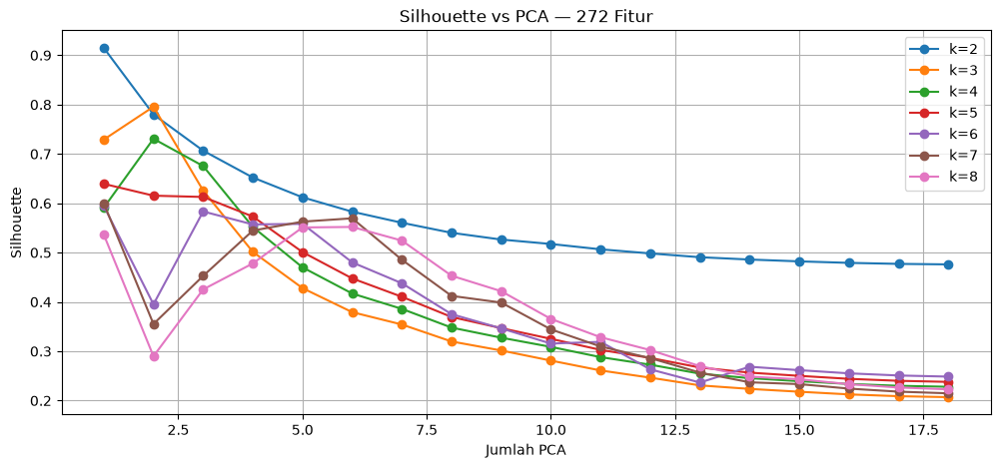
10. Ringkasan#
kesimpulan : (1) pola time series setiap polutan, (2) statistik dasar, (3) 68 fitur dan contoh perhitungan, (4) verifikasi TSFEL, (5) PCA dan explained variance, (6) Elbow dan Silhouette, (7) hasil 68 fitur tiap polutan, dan (8) hasil 272 fitur.
ring=[]
for p,e in hasil_68.items():
r=e.loc[e.silhouette.idxmax()]; ring.append({'Dataset':p+' — 68 fitur','k':int(r.k),'Silhouette':r.silhouette,'Inertia':r.inertia})
r=e272.loc[e272.silhouette.idxmax()]; ring.append({'Dataset':'Gabungan — 272 fitur','k':int(r.k),'Silhouette':r.silhouette,'Inertia':r.inertia})
display(pd.DataFrame(ring))
| Dataset | k | Silhouette | Inertia | |
|---|---|---|---|---|
| 0 | CO — 68 fitur | 5 | 0.368727 | 437.727750 |
| 1 | SO2 — 68 fitur | 2 | 0.602519 | 783.945015 |
| 2 | CH4 — 68 fitur | 7 | 0.289520 | 311.859519 |
| 3 | NO2 — 68 fitur | 2 | 0.698217 | 555.822126 |
| 4 | Gabungan — 272 fitur | 2 | 0.476048 | 3801.595148 |